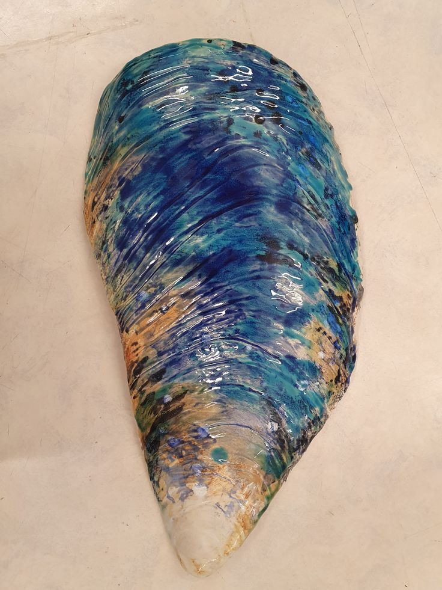
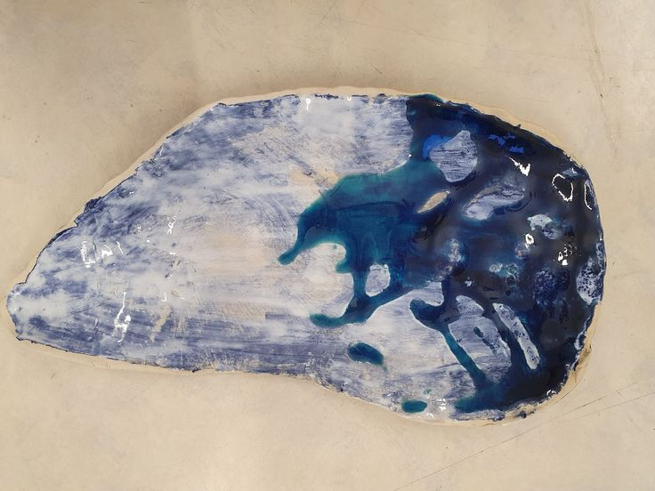

Blue Mussle Ceramic
During my third year of high school studying art I made a serie of ceramic with the theme of mussles and shells. This piece is inspired by the looks of an Blue Mussle. This piece could be used as an decoration or even as a plate since it could be displaced both sides. I chose the sheer glace for this piece to get the shiny and aquatic feel with a mix of different colors of blue and yellow.
 